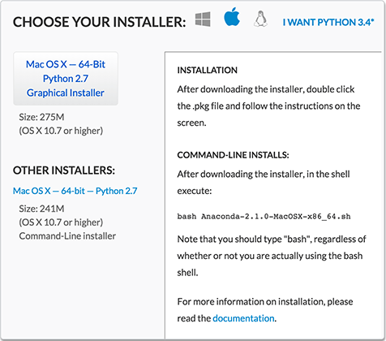
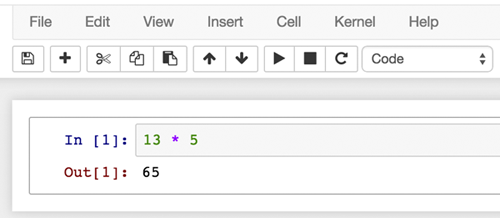

NESW Workshop
Telling Science Stories with Code and Data
Instructions for Participants
Our workshop will be a hands-on event. You’ll be writing, testing, and debugging your own programs on your own computer. At the end of the day, we want you to go home with a completed project that works. To make all this happen, you’ll need to do some advance preparation. In particular, it’s important that everyone arrive on Saturday morning with the necessary software already installed and working.
Don’t be put off by the length of these instructions. The process is not really complicated, but we’ve spelled things out in detail just to be sure no one gets lost along the way.
What to Bring
You will need a reasonably modern laptop computer, with working wifi, an up-to-date web browser, and about a gigabyte of available space on the disk drive for the software we’re about to install. Also helpful is a Dropbox account for sharing files with the members of your group and uploading them to the workshop website.
- Windows computers should be running Windows Vista or later (version 7, 8, or 8.1).
- Macintosh computers need OS X version 10.6.8 (Snow Leopard) or later.
- What about Linux? Should work, but we’re not giving step-by-step instructions.
- Google Chrome is the recommended web browser, but Firefox or Safari should work in a pinch. If you prefer Internet Explorer, please make sure it’s the latest version.
- If you don’t have a Dropbox account, you can sign up for a free account, which comes with 2 gigabytes of storage.
- Installing the programming-language software will fill up about 1.1 gigabytes (1100 megabytes) of free disk space, and you’ll briefly need even more than that during the down-load-and-install process. If you are short of disk space, please see the note below. All of the software can easily be removed after the workshop, if you need to recover the space used.
Don’t forget to bring your power cord and charger!
The Security Question
The Internet is a rough neighborhood. We’re urging you to install gobs of software from sources you’ve probably never heard of. Is that safe?
There are certainly no guarantees, but the specific software recommended here is in use by many thousands of programmers, who are well qualified to detect anything fishy going on behind the scenes. Within this social milieu, having access to the source code is generally considered a better certificate of integrity than relying on approval from Apple or Microsoft.
At some stages of the installation process, you may see warnings about the risks of downloaded software. Your browser might display a message saying “This kind of file could harm your computer.” And recent versions of the Macintosh operating system are configured by default to allow only software from the Apple store and other “trusted developers.” You will have to override or turn off these warnings (see Apple’s instructions here).
Another point to keep in mind is that we ourselves are “untrusted developers.” We’ll be playing with sharp tools that have the power to wreak havoc, say by deleting all the files on your hard disk. Such catastrophes are extremely unlikely, unless you deliberately set out to commit mischief, but it’s worth keeping in mind that we are playing outside the sandbox.
Installing Python
In the workshop we’ll be exploring two programming ecosystems: Python for data analysis and JavaScript for building interactive storytelling aids. But there is overlap between these two worlds, and we encourage everyone to set up a working environment for both. Let’s start with Python.
Even if you already have a version of Python on your machine, we suggest installing the Anaconda distribution from Continuum Analytics and using it for the workshop. It won’t interfere with your existing setup, and you can remove it later with no fuss.
- Go to http://continuum.io/downloads/. You should be offered an installer tailored to your operating system.  (If you’re offered the wrong choice, click one of the three icons at the top of the panel—windowpane, apple, tux.)
- Unless you’re a command-line guru, you probably want the “Graphical Installer.”
- Please choose Python version 2.7, which is the default option, not Python 3.4.
- Click the button to start the download. Now might be a good time to get a cup of coffee; it’s a big file.
- When the download completes, you should have a
.pkgfile on Macintosh or an.exefile on Windows. In either case, double-click it. - The installer program has its own on-screen instructions, and there’s also a walk-through on the Anaconda website.
- You need to choose a place to put the software. On Macintosh the default choice is your home directory. The installer may display an error message: “You cannot install Anaconda in this location.” In fact you can, if you just click another choice and then return to the home-folder selection. Or you can put the software anywhere else you’d like, such as the main “Applications” folder. (You may be asked for an administrator password.)
- If all goes well, you’ll get a message saying the installation was successful.
- And what if all doesn’t go well? You might find a LiveChat icon on the Continuum.io install page. There’s a FAQ. There’s an Anaconda Issues page on GitHub. There’s a Google Group where you can ask for help. Or get in touch with us—the workshop organizers.
- Once you’ve completed the installation, you can throw away the installer (the
.pkgor.exefile).
Note: On March 31, Continuum Analytics released a major upgrade to Anaconda Python. If you downloaded the package before then, please see the instructions for updating under Command Performance below.
Trying Out Python and IPython Notebook
Let’s try out that shiny new programming language!
- On Macintosh, open the new “anaconda” folder. Among the files and folders inside, you’ll find one called “Launcher” or “Launcher.app”; double click it. On Windows, Launcher will be found in the Start menu.
- After a few seconds, a list of launchable programs should appear; find the one labeled “ipython-notebook.” Click the dark blue “Launch” button (not the “Update” button, if there is one).
- A Terminal window may appear briefly, then your web browser should launch; if the browser is already running, a new window or tab will open up. The banner at the top of the window will say “Jupyter.” This is going to be the new name of IPython notebook, although at the moment both names coexist.
- In the Jupyter/IPython window you’ll see a list of files and folders, and near the upper right corner a “New” button. Clicking on “New” reveals a short menu; choose the “Python2” item.
- Yet another tab or window should now open in the browser. At last you have reached the promised land of the notebook! This is where you have a conversation with the Python interpreter. You write a Python expression in a box that has an
In [ ]:prompt; the interpreter replies in anOut [ ]:box. Of course it’s not so easy to write a Python expression if you don’t know any Python. Let us resort to mathematics, the universal language. Type in a simple addition or multiplication problem, then pressAlt-Enter(orOpt-Enteron Macintosh):  - Feel free to explore further. You might start by visiting the Help menu and taking the user interface tour. Or type ‘?’ into a cell (and press
Alt/Opt-Enter). For a deeper dive, go to the workshop Python page and download the IPython notebook you’ll find there.
Installing the Brackets Editor for JavaScript
For JavaScript programming, you don’t need to install JavaScript itself; the machinery for running JavaScript programs is already built into your web browser. What you do need is an editor program—a piece of software that will help you write JavaScript programs, and also the HTML and CSS files that form part of a web document. In principle, you could use any editor that produces plain text output, such as Notepad on Windows of Textedit on Macintosh. But a more specialized editor—one designed explicitly for writing code—will make your life easier with hundreds of little amenities such as indenting lines automatically, balancing quotation marks and parentheses, and suggesting likely continuations as you type.
We recommend an editor called Brackets. Development of the software was initiated by Adobe Systems, but Brackets is now an open-source software project with a large community of contributing programmers. (The source code is on GitHub.) Brackets is still new and evolving, but it already offers a pleasant environment for creating web documents and JavaScript programs. Especially nice is the ability to see the effects of your changes instantly in a browser window, without any need to set up a web server.
- Brackets works best with the Google Chrome web browser. If you don’t have Chrome installed, you can get a copy at www.google.com/chrome/. But if you’d rather stick with another browser, it will probably work.
- Download the Brackets installer from brackets.io. (The big blue download button will also fetch an Adobe program called Extract, but there’s a link in small type just below the button that gets you Brackets alone.) On Macintosh you’ll get a
.dmgfile; double click it to open the disk archive, then drag the application icon to some appropriate spot on your disk, such as an Applications folder. The Windows download is an.msifile, which you can double click to install. - Now doubleclick the application icon to start the Brackets program itself. You’ll see a window displaying the text of a file named
index.html. Near the top of the right margin of this window is a gray lightning bolt, , which should turn orange when you click it: . The spark represents a link to a live preview, which opens in a new window or tab in the Chrome browser, showing the fully formatted web page. - If Chrome is not installed, you’ll get an error message complaining that it can’t be found. If you choose not to install Chrome, go to the Brackets
Filemenu and click the itemEnable Experimental Live Preview. That should allow the preview to appear in your default browser. - Other problems? Try the troubleshooting file.
Next steps. The “Getting Started with Brackets” file that opens automatically when the program is first run has some basic information; there’s more in the Brackets Wiki, including videos and a troubleshooting guide.
If you’re unhappy with the aesthetics of the editor, you can install a new theme. Go to the file menu and click on Extension Manager... for a list of options. There are also some dozens of extensions that do useful or silly things.
When you’re ready to start exploring JavaScript programming, take a look at JavaScript in a Jiffy.
Command Performance
All of the procedures described above are done with the familiar point-and-click interface of modern computers. Many programmers would choose to perform the same tasks from the command line. If you are not accustomed to command-line operations, it’s worth spending a few minutes to get acquainted. On a Macintosh, you run the Terminal program, which is generally installed in the Utilities folder. On Windows, Command Prompt is found via Start > All Programs > Accessories.
Here is a terminal session for launching an IPython notebook. Typed input is shown in color; prompts and system output are in black. The command pwd prints the current working directory, and cd changes the directory. (The “user$” prompt will be different on your machine.)
Last login: Sun Mar 29 16:42:25 on ttys005 user$ pwd /Users/user user$ cd ~/GitHub/nesw-workshop nesw-workshop user$ ipython notebook [I 16:45:18.795 NotebookApp] Serving notebooks from local directory: /Users/user/GitHub/nesw-workshop [I 16:45:18.795 NotebookApp] The IPython Notebook is running at: http://localhost:8890/
Launching IPython from the command line—rather than using the Launcher application—has its advantages. In particular, it allows you to specify the directory where files will be saved.
If you have an older version of the Anaconda Python package (downloaded before April 1, 2015), you can update it by issuing a few simple commands. The abbreviated transcript below shows how it’s done; again, user inputs are in red.
user$ conda update conda Fetching package metadata: .... Solving package specifications: . Package plan for installation in environment /Applications/programming/Python/anaconda: . . . Proceed ([y]/n)? y Fetching packages ... . . . user$ conda update anaconda Fetching package metadata: .... Solving package specifications: . The following packages will be downloaded: . . . Proceed ([y]/n)? y Fetching packages ... . . . user$ ipython notebook
For a quick introduction to terminal commands in OS X and other varieties of Unix, try the Treehouse blog. Princeton has a guide to the Windows command prompt.
Short of Disk Space?
If all this stuff just won’t fit, the first option to consider is Miniconda. This is a version of the Anaconda installer that includes only Python itself and the conda package manager, with none of the 200 other packages. The trouble is, those packages include most of the goodies that make Python useful and fun. You can install them separately as needed, but unless you’re very selective you may again run into disk-space constraints.
A few services allow you to run Python and IPython “in the cloud”—that is, on someone else’s hardware. The Anaconda folks have a version of this idea called Wakari. Another implementation is called the Temporary Notebook Service. But what you get for free with these services is necessarily limited. The Temporary Notebooks, for example, are truly temporary: Everything you’ve done disappears after 10 minutes of inactivity.
What about installing the software on an external hard disk or a thumb drive? Probably not a good solution. The USB interface to an external disk is much slower than the connection to an internal drive, and so performance will be very sluggish. A better use of an external drive is to hold other files that don’t require immediate access, allowing you to clear some space on the main disk.